Pravin Nair |
Biography
I am currently a Chief Engineer at AI Video Processing Lab, Samsung Research Institute, Bengaluru. Before that, I received my Ph.D. degree from the Department of Electrical Engineering, Indian Institute of Science, Bengaluru, in 2022, under the supervision of highly knowledgable Prof. Kunal Narayan Chaudhury. Prior to that, I completed my Postgraduation (M.Sc. by Research) from the Department of Electrical Engineering, Indian Institute of Science, in 2018 and undergraduate (B. Tech) from the Department of Electronics and Communication Engineering, Amrita School of Engineering, Coimbatore. I also briefly worked as a software engineer at Pace Microtechnology, Bengaluru from 2011 to 2014.
Research Interest
I work in the field of computer vision, specializing in particular on developing traditional and deep learning techniques for inverse problems in low-level computer vision. In industry, I focus on building real-time and power-efficient AI solutions for image and video enhancement applications like image denoising, image super-resolution, video super-resolution, video stabilization, camera motion classification, etc. In my academic journey, I mainly worked on how to incorporate traditional model-based methods and deep learning-based or traditional regularization for efficient and interpretable image restoration. The following are my research interests:- Deep plug-and-play image restoration
- Real-time and power-efficient AI for image and video enhancement
- Deploying generative models for image enhancement
- Deep unfolding image restoration
- Camera pipeline
News
- Got promoted to Senior Chief Engineer in AI Video Processing Labs, Samsung Research Institute Bengaluru [29/02/2024] li
- Journal Paper with Prof. Kunal N. Chaudhury on "Averaged Deep Denoisers for Image Regularization" is accepted in Journal of Mathematical Imaging and Vision [22/02/2024]
- Our team at Samsung received the Samsung Excellence award for our work on Zoom solution for S24 Ultra [31/01/2024]
- Our team's solution for 10-100x zoom for Samsung Galaxy S24 Ultra is commercialized now. Many reviews have claimed our solution to be better than the iPhone 15 Pro Max [24/01/2024]
- Selected to receive Best Ph.D. Thesis award for the year 2022 at the Department of Electrical Engineer, Indian Institute of Science [31/12/2023]
- Award for efforts in fostering a continuous learning culture in SRIB through engaging sessions for 2023 [15/12/2023]
- Work with Prof. Kunal on 'Convergent Plug-and-Play image regularization using Contractive Denoisers' is accepted in IEEE ICASSP 2024 [13/12/2023]
- Received spot award in Samsung Research Institute for outstanding contribution in developing denoising model for image capture pipeline and bringing the baseline for generative AI models [04/08/2023]
- Officially convocated from Indian Institute of Science with Ph.D. in Department of Electrical Engineering [31/07/2023]
- Delivered a lecture on Introduction to Generative AI - VAE, GAN, and Diffusion models as a part of Deep Blue - Deep Learning Lecture Series in SRIB. [18/07/2023]
- Awarded as "Technical Expert" in Advanced Research Group in Samsung
- Delivered a lecture on Support Vector Machines as a part of the Deep Blue - Machine Learning Lecture Series in SRIB. [25/05/2023]
- Work on full-frame video stabilization was awarded as A1 graded US patent
- Delivered a lecture on Mathematical Optimization for ML and DL as a part of the Deep Blue - Mathematics Lecture Series in SRIB. [02/05/2023]
- Defended my PhD Thesis on "Provably Convergent Algorithms for Denoiser Driven Image Regularization" [26/10/2022]
- Collaboration with Unni V.S on "Guided Nonlocal Patch Regularization and Efficient Filtering Based Inversion for Multiband Fusion" got accepted in IEEE TCI journal" [03/10/2022]
- An interesting work of image regularization by solving a linear system, "Plug-and-Play Regularization using Linear Solvers" got accepted in IEEE TIP journal" [06/09/2022]
- Joined Advanced Research Group in Samsung Research Institute, Bengaluru as Chief Engineer [27/06/2022]
- Successfully submitted my Ph.D. Thesis [June 2022]
- Theoretical work on "Fixed-Point and Objective Convergence of Plug-and-Play Algorithms" got accepted in IEEE TCI journal" [03/03/2021]
- Travelling to Taiwan to present the conference paper "Hyperspectral image fusion using fast high-dimensional denoising" in ICIP 2019 [18/09/2019]
- Remember Nystrom Approximation!!! A surprising finding where we use Nystrom approximation to speed up high dimensional filters "Fast High-Dimensional kernel filter" got accepted in IEEE Signal Processing Letters" [05/01/2019]
- Our Paper on "Fast High-Dimensional Bilateral and Nonlocal Means Filtering" got accepted in IEEE TIP journal" [03/10/2018]
- Defended my masters Thesis on "Fast high-dimensional filtering" [08/05/2018]
- Successfully submitted my master's Thesis !!! [January 2018]
- Travelling to China to present my first conference paper "Fast high-dimensional filtering using clustering" in ICIP 2017 [15/09/2017]
- After rigorous review, our paper along with code is published in Image Processing On-Line (IPOL) journal" [24/05/2017]
Thesis documents
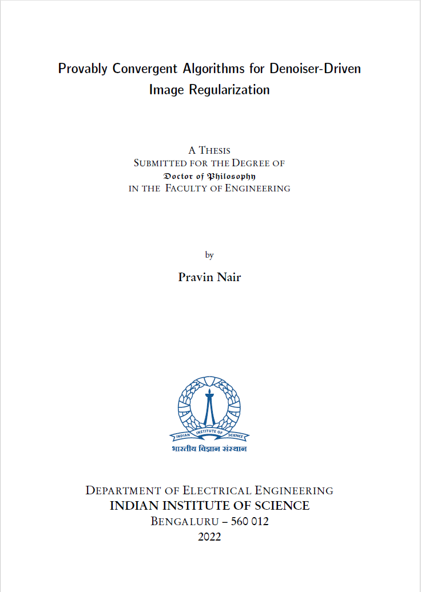
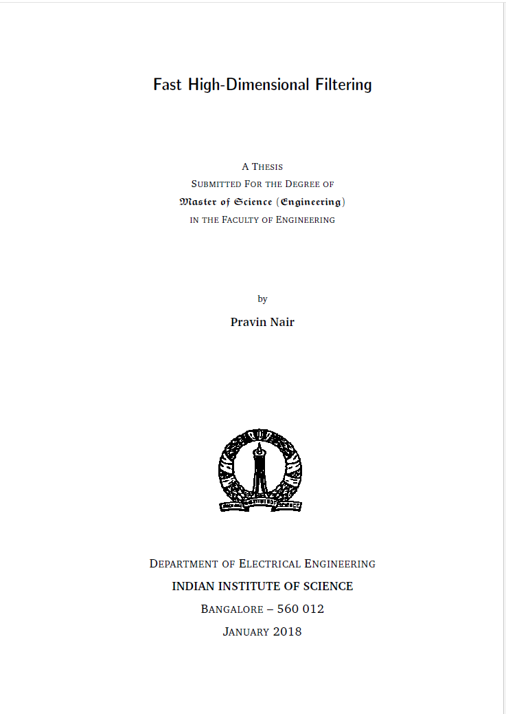
Selected Publications
| 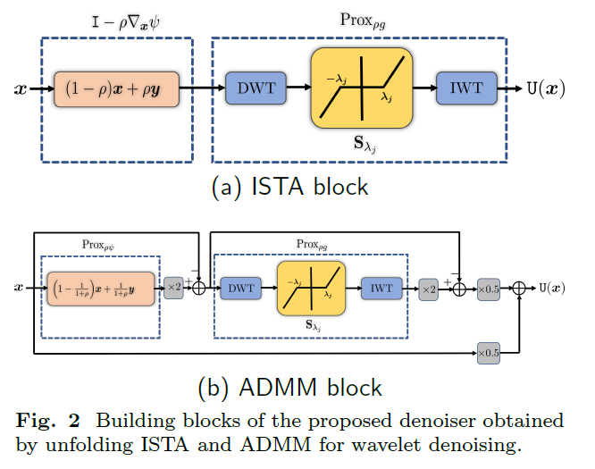 |
Averaged Deep Denoisers for Image Regularization |
| 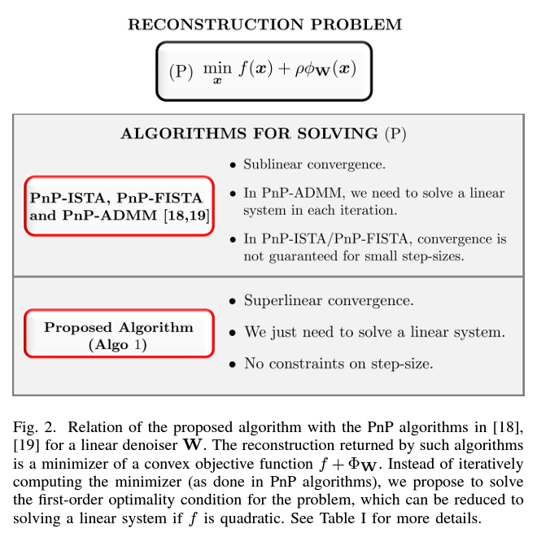 |
Plug-and-Play Regularization Using Linear Solvers |
| 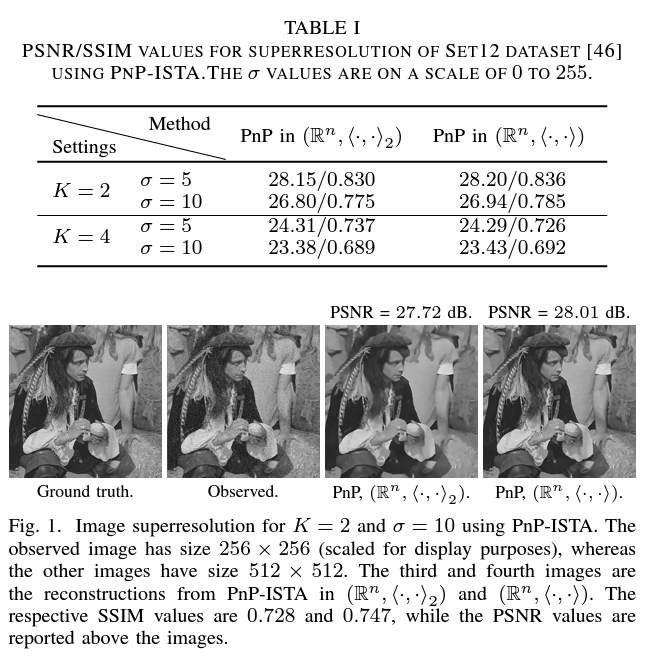 |
Fixed-point and objective convergence of plug-and-play algorithms |
| 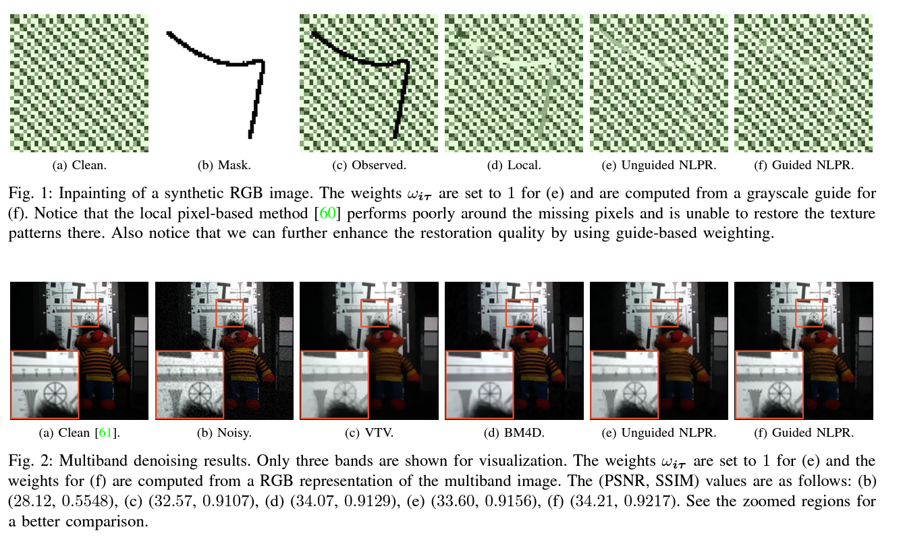 |
Guided Nonlocal Patch Regularization and Efficient Filtering-Based Inversion for Multiband Fusion |
| 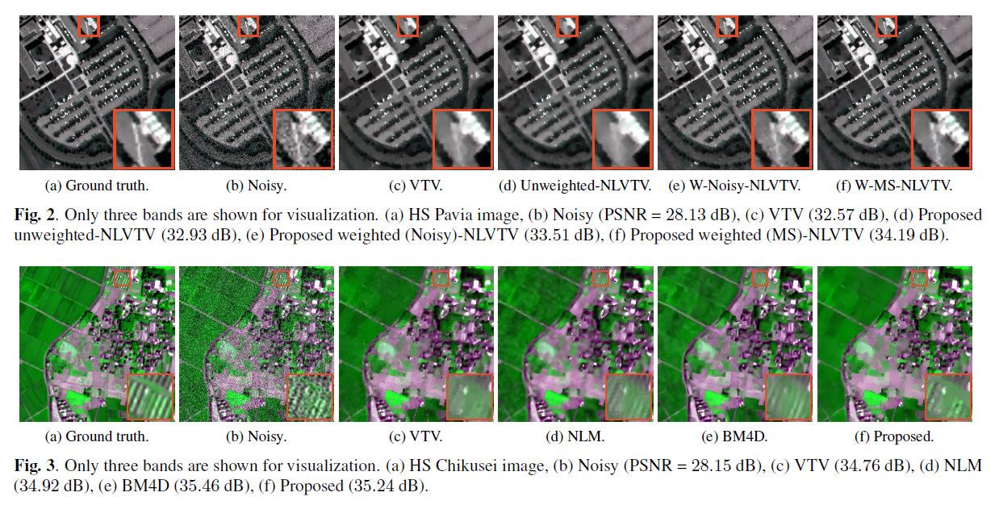 |
Hyperspectral Fusion Using Weighted Nonlocal Vector Total Variation |
| 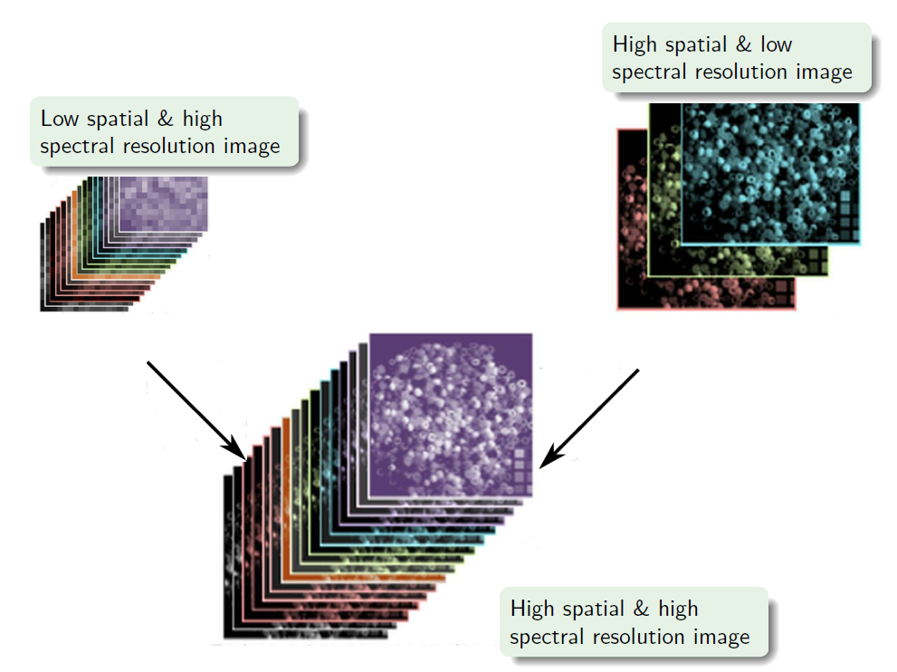 |
Plug-and-play registration and fusion |
| 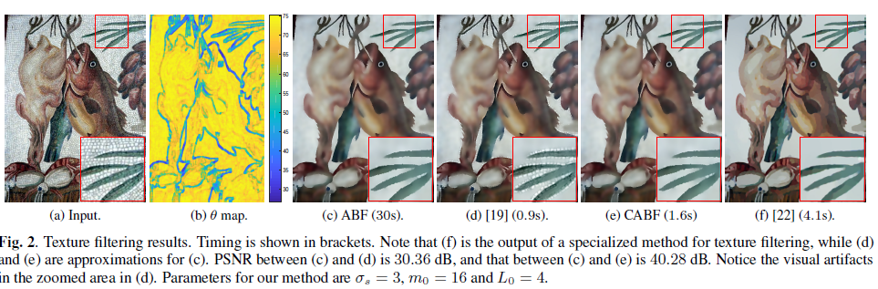 |
Compressive adaptive bilateral filtering |
| 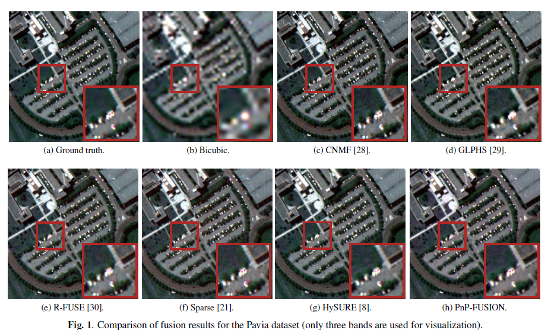 |
Hyperspectral image fusion using fast high-dimensional denoising |
| 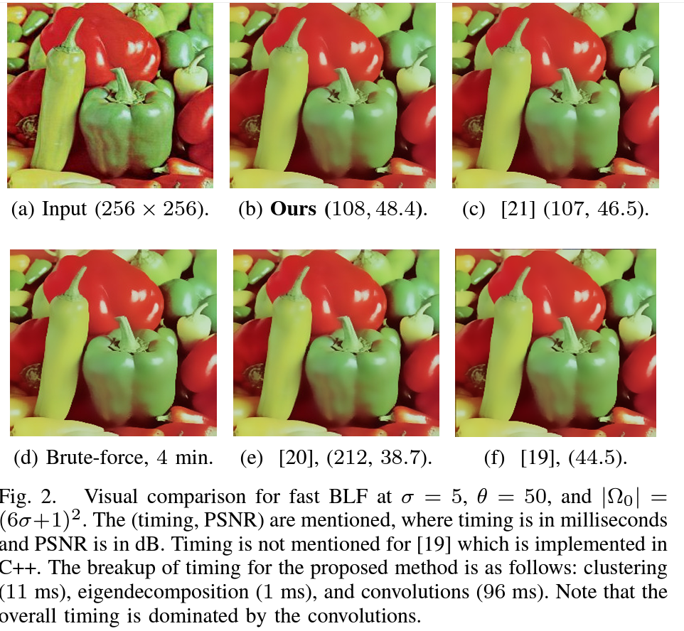 |
Fast High-Dimensional Kernel Filtering |
| 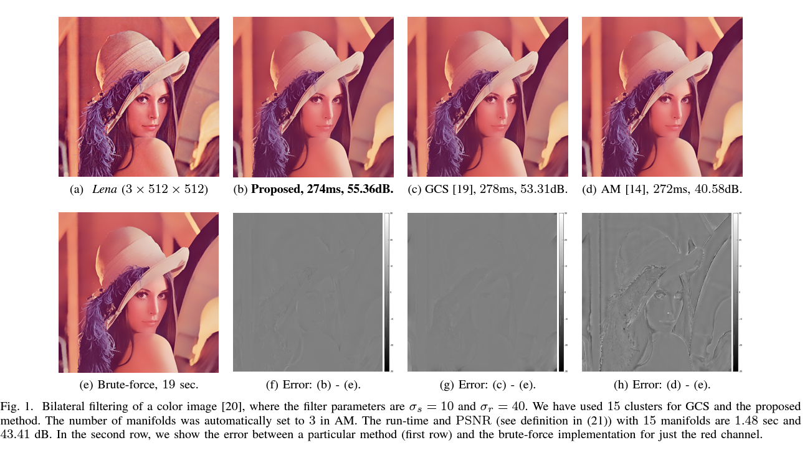 |
Fast high-dimensional bilateral and nonlocal means filtering |
| 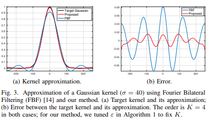 |
Optimized fourier bilateral filtering |
| 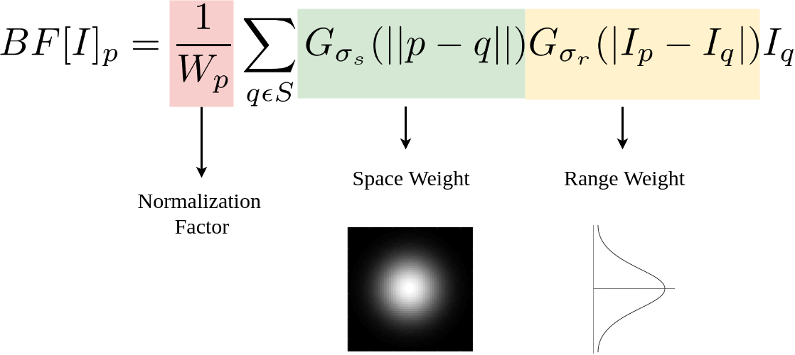 |
A concise review of fast bilateral filtering |
| 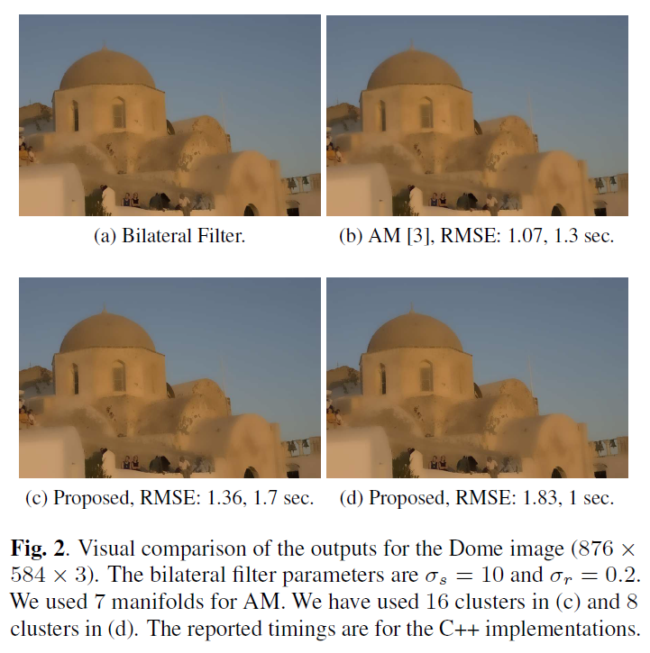 |
Fast high-dimensional filtering using clustering |
| 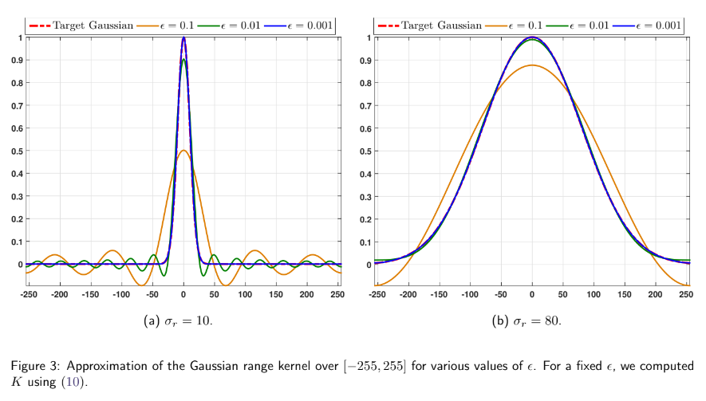 |
A fast approximation of the bilateral filter using the discrete Fourier transform |